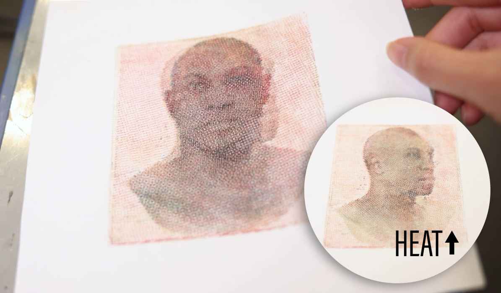

Thermochromorph: Dynamic Relief Printing with Thermochromic Inks


Thermochromorph is a novel workflow for producing visually dynamic relief printed images. Our method combines complementary thermochromic inks with a CMYK-based relief printing process.
We present the notion of creating dynamic relief prints using thermochromic inks, exploring the dimensions of time and temperature applied to the context of printmaking. This project incorporates historical printmaking technologies with digital tools to create physical pieces with visual transitions, providing a new direction for the medium of printmaking to grow. Our applications explore the significance of existing historic prints, presenting ways that our technology modifies and contributes to the meanings of printed media. Our software and corresponding fabrication process open up this new medium to the public, lowering the barrier to entry for making interactive printed works.
MOTIVATION
Both digital and analog printmaking continue to offer opportunities for exploration in materials and technology. Relief printing is a form of analog printmaking that involves carving a design into a block of material, applying ink or pigment to the carved block, and then transferring the image onto paper or another surface. The relief printing process has three core components: the printing matrix (i.e., the block), the printing surface, and the ink. The practice of substituting materials in these components can have a significant impact on the affordances and outputs. Artists and practitioners have explored using different materials to create the printing matrix, from synthetic materials such as linoleum and rubber, to natural materials such as fruits and vegetables. Similarly, practitioners have explored printing on different surfaces, such as fabric and clay. In this paper, we explore how changing the ink can alter the dynamics of relief printing. We propose that thermochromic inks, which change color through temperature, can make relief prints more visually expressive and physically interactive.
Artists have experimented with different methods and techniques for the relief print creation process. In particular, a number of contemporary printmakers have developed hybrid methods which combine the time-honored traditions of the craft with the affordances of modern digital tools. For example, Katsutoshi Yuasa combined digital CMYK imaging techniques with hand-carved Mokuhaga block printing to create intricate prints with photographic detail, while Mike Lyon developed custom software and used CNC machining to create blocks.
In a similar vein, we create our thermochromic prints using digital processes (via CMYK imaging and laser cutting) supplemented with analog techniques (via manual printmaking and thermochromic inks). Our software design tool and chosen imaging process establish a groundwork of predictability, while the printing process and inks introduce serendipity into the final outputs.
In contrast to commercial offset lithography, which yields predictable and uniform outputs, handmade prints are unique due to the inherent imperfections of the manual printmaking process---raising questions of repeatability and reproducibility. Unlike standard prints, thermochromic prints are also dynamic: images can now transition into each other, and the way they transition varies depending on how heat is applied. This facilitates a viewing experience that changes in response to touch or different ambient conditions.
Thermochromic inks have seen a range of applications in Computer Graphics and Human-Computer Interaction research. Our work applies thermochromic inks to an artistic domain to broaden our understanding of relief printing's expressive potential and offer insights that may inspire innovative approaches to this time-honored printmaking technique.
DYNAMIC PRINTS
We present five dynamic prints to illustrate Thermochromorph's expressive range.


Our first print recreates an Ukiyo-e design, titled ``Gaifū Kaisei'', by Katsushika Hokusai. Ukiyo-e was a popular artistic movement in Edo Japan that utilized advanced color techniques in woodblock printing on a large scale. Hokusai's design represents a fleeting moment of an Autumn morning where Mt. Fuji appears to have a stunning red hue. Our application uses this design for our hot image and depicts Mt. Fuji as it normally appears throughout the rest of the day as the cold image. By briefly warming the print before allowing it to cool down, we can reinforce Hokusai's intention of depicting this ephemeral moment in time. The resulting print could potentially warm up in the sunlight and mirror the actual mountain's color change in real time.


Our second print references a Morris and Co. wallpaper design created during the Industrial Revolution in England. The rise of industry accelerated the rate designs could reach the public and printing for decorative purposes became viable. The original design depicts a detailed array of flowers, bringing nature into the industrialized homes of its customers. Our application takes this image and illustrates the flowers blooming as the day warms up, bringing not just the visuals of nature but also its dynamic manner into an otherwise man-made environment.


Our third print takes both of its frames from a Batman comic drawn in the 20th century. CMYK printing was invented in 1906 and drastically opened up the colors available to the printing world, only requiring four standardized inks to create almost any color imaginable. As comic books utilized CMYK printing, they could be easily printed in vibrant color and circulated widely for entertainment purposes. This application takes the comic book idea of conveying a progression of events by creating a transition between Robin preparing to punch and then punching with a ``POW'' sound effect. The result further opens up possibilities to convey sequenced data to the audience while still maintaining the physical nature of printed media.


PRINTMAKING WORKFLOW
Creating a thermochromic print involves a series of steps for preparing the materials, including the ink and block.
Material mixing
Due to the lack of readily available pre-mixed thermochromic block printing inks, we formulated our own. We combined a water miscible, oil-based transparent block printing base (Speedball Professional Relief Ink Transparent Base) with each thermochromic pigment following a ratio of 1:5 by weight. This ratio ensured a balance between pigment concentration and ink viscosity.
Fabrication process
Our fabrication process encompasses several steps, from woodblock preparation to the layering of pigments to achieve the desired visual effect.

The printmaking procedure comprises (a) coating ink onto the rubber brayer, (b) transferring ink onto the block, (c) registering the block to ensure proper alignment, and (d) using the printing press to transfer ink from the block to the printing surface.
Block preparation. In selecting our blocks, we opted to use hardwood materials due to their durability and ability to show high-resolution details. We laser cut and engrave 25mm walnut sheets using the fabrication files generated by our software. Following the laser cutting process, we rinse the woodblocks with water to remove any residual particles and ensure a clean surface.
Inking the block. To ensure even and smooth ink distribution across the block surface, we first use a rubber brayer to spread a thin layer of ink onto a plate. Once the ink evenly coats the brayer, we apply the ink onto the block.
Registration. In relief printing, registration refers to the precise alignment and positioning of multiple carved blocks or stamps to ensure that the different colors or design elements in a print align correctly with one another on the final printed image. We achieve proper registration with a frame registration jig, which is used for positioning the printing block for the current layer. We then place our printing surface (e.g., paper) on top of the block and secure it with tape.
Printing the images. We use a printing press to make our prints, which ensures that pressure is evenly applied across the printing surface. We then follow an 8-layer printing process. We start by printing the hot image with clear-to-color inks in YCMK order. Since the hot image is only visible at the activation temperature, we can check the color of each layer by warming the printed image with a heat gun. If any areas did not receive sufficient ink, we reapply ink to the block and use a precision tool (e.g., a spoon) to apply focused pressure in those specific regions. After printing the hot image, we subsequently print the cold image in YCMK order with color-to-clear inks.
Our method follows an 8-layer printing process that starts with printing the hot image followed by the cold image.